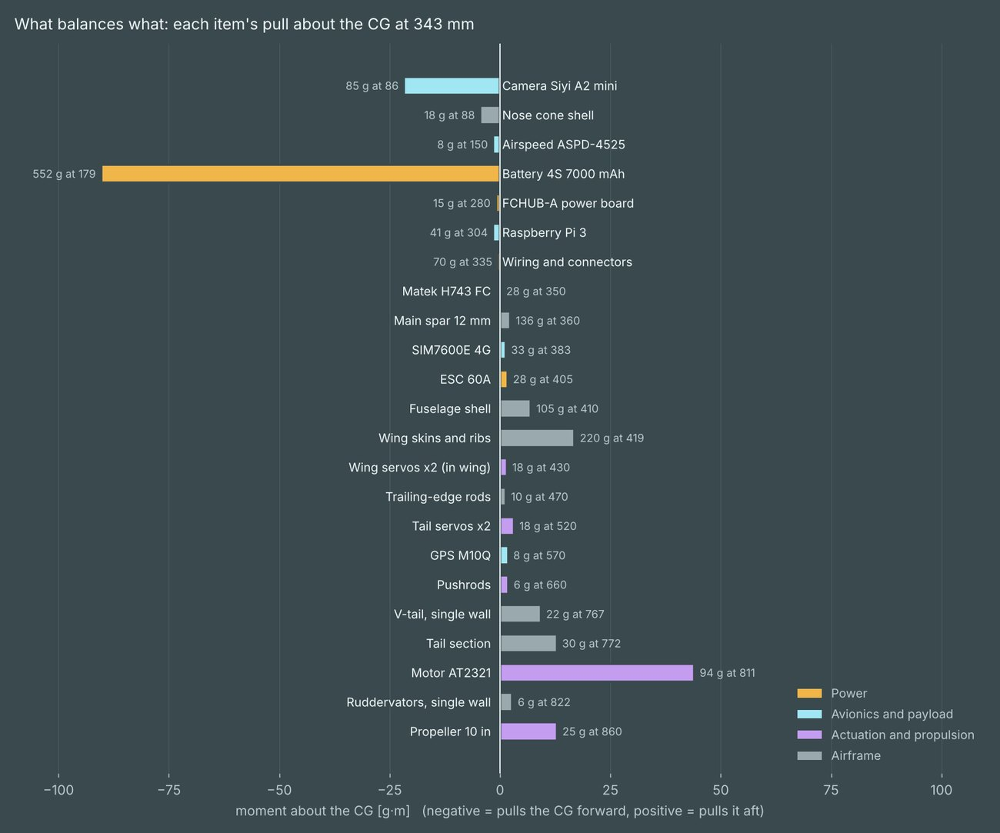
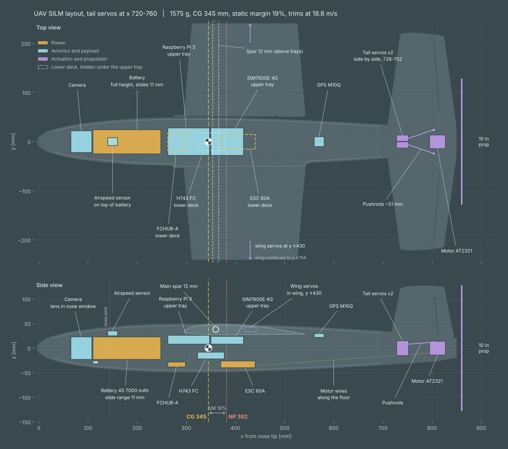

Where every part sits, and why
We placed each component against real cross-sections of the fuselage, then balanced the aircraft from the 3D model. Pick a part in the model or the list, and try the battery and tail-servo options to see how the balance moves.

Three modules: nose, fuselage, tail
Two top hatches: A for the battery (150–300), B for the avionics (303–370).
| Component | Mass | x from the nose | Level | Why it sits there |
|---|---|---|---|---|
| Camera, Siyi A2 Mini | 85 g | 65 to 108 mm | Centreline, nose window | As far forward as it goes. It needs a forward view, and at 85 g it is the second-biggest weight ahead of the CG. The lens looks out through a window in the nose. |
| Airspeed sensor, ASPD-4525 | 8 g | 140 to 160 mm | On top of the battery | Close to the pitot tube, so the pressure tubes stay short. With a pusher propeller the nose is the only clean air. |
| Battery, 4S 7000 mAh | 590 g | 110 to 248 mm | Centreline | A third of the total mass, so it is our main balance adjuster: 10 mm of movement shifts the CG by 3.5 mm. It sits on the centreline, where the round fuselage is widest, and the nose taper stops it going further forward. |
| Power board, FCHUB-A | 15 g | 262 to 298 mm | Lower deck | Directly behind the battery, so the thick battery leads are as short as possible. Everything else takes power from here. |
| Raspberry Pi 4 | 46 g | 262 to 347 mm | Upper tray | On the upper tray under the wing root. Its first position, on a tray above the battery, hit the fuselage wall. |
| Flight controller, Matek H743 | 28 g | 323 to 377 mm | Lower deck | Its centre is 7 mm from the CG. The motion sensors work best close to the CG, where rotation adds the least false acceleration. |
| 4G module, SIM7600E | 33 g | 350 to 416 mm | Upper tray | Next to the Pi for a short USB cable, and below the main spar. Its antennas go on the fuselage sides, away from the GPS. |
| ESC, 60 A | 28 g | 370 to 440 mm | Lower deck | Keeps the battery-side leads short. The long motor wires run along the floor to the tail. It sits on standoffs with an air gap. |
| Wing servos, 2 × SG90 | 18 g | 430 mm, in the wing | In the wing, 430 mm out to each side | In the wing next to the ailerons. Only their leads enter the fuselage. |
| Tail servos, 2 × SG90 | 18 g | 508 to 532 mm, or 728 to 752 | Centreline, side by side | Two options under study: ahead of the wing trailing edge with 270 mm pushrods, or in the tail with short links. The CG differs by only 2.4 mm between them. |
| GPS and compass, M10Q | 8 g | 560 to 580 mm | Top | Behind the wing, so the carbon spar does not block the sky, and away from the ESC, motor and 4G module because of its compass. |
| Pushrods | 6 g | 532 to 803 mm | Centreline to the ruddervator horns | Carry the tail servo movement to the ruddervators. At this length they need two guides each so they do not bend. |
| Motor, T-Motor AT2321 | 94 g | 795 to 827 mm | Inside the tail cone | As far aft as the tail cone allows. Its long shaft passes through the end face to the propeller. The cone needs cooling vents. |
| Propeller, 10 in pusher | 25 g | 860 mm | Behind the tail | Pushes from behind, which keeps the nose and the camera view clear of the propeller. |
| Wiring and connectors | 70 g | about 335 mm | Spread through the fuselage | Counted as one mass at about 335 mm, close to the CG. |
Positions are along the fuselage from the nose tip. The airframe itself is part of the balance too: about 630 g of printed shells, wing and tail (CAD masses calibrated on the weighed nose cone), the fuselage joints, the battery tray, the 7 mm carbon wing tube and the hatch magnets. Some small items are not placed yet.
An aircraft balances like a seesaw on its centre of gravity. The battery and camera at the front balance the motor, the tail and the rear half of the wing. The chart shows how hard each item pulls the balance point forward or aft: its mass times its distance from the CG.
For stability the CG has to sit ahead of the neutral point, where the extra lift from a gust acts. The gap between the two, as a share of the mean wing chord, is the static margin. Ours is about 20%, a comfortable value for first flights.
Why we moved the wing instead of adding weight
Our first balance check put the CG at 411 mm, behind the neutral point at 364 mm, so the aircraft would have been unstable. We moved the electronics forward, planned a lighter single-wall V-tail and moved the wing 20 mm aft. In CFD the wing move shifted the neutral point by 18.2 mm but moved the CG only about 5 mm, because the wing is only a quarter of the mass. Reaching the same margin with the old wing position would have needed about 80 g of weight in the nose.

A side view hides the real constraint: the fuselage is round. We sliced the 3D model every 2 to 4 mm along its length and checked that each component's box stays at least 5 mm inside the outer skin, which leaves room for the 4 mm wall and 1 mm of clearance. Three clashes came up.
Raspberry Pi on a tray above the battery
It overlapped the wall by 0.8 mm. We moved it to the upper tray behind the battery, where it has 21 mm to spare.
Camera fully inside the nose at x 80
It did not fit, so the lens now looks out through a window in the nose. Enclosing it completely would push the camera and battery 35 mm aft and move the CG about 14 mm.
Motor at 814 to 846 mm
Only 1.1 mm of wall was left in the narrowing tail cone. We moved it forward to 795 to 827 mm (5.7 mm margin), with a long shaft out to the propeller.
- The battery only fits on the centreline, where the round section is widest. Raised or lowered, its corners hit the wall.
- Between 295 and 545 mm everything stays below 27 mm above the centreline, because the wing root and spar take the space above.
- Tightest fits after the changes, apart from the camera in its window: motor 5.7 mm, battery 5.9 mm, airspeed sensor 6.6 mm, ESC 7.4 mm.
We plan to print the trays in PETG and keep LW-PLA for the skins. Foamed LW-PLA is brittle in thin plates, crushes around screws and inserts, and softens at around 55 to 60 °C.
- Battery tray: PETG, a 2 mm floor with ribs and slots for the 11 mm slide, held with a strap and Velcro. Wide glued flanges spread a crash load of about 100 N into the fuselage.
- Electronics: one removable two-level PETG sled, wired and tested on the bench, then slid in through the hatch.
- Flight controller: on rubber grommets or a printed TPU plate, so motor vibration does not reach its motion sensors.
- ESC: on standoffs with an air gap, away from the skin.
- Fixings: heat-set inserts only in PETG parts; PETG bonded to LW-PLA with epoxy.
- No carbon-filled filament near the electronics: it is slightly conductive and weakens GPS and 4G signals.
The trays add about 30 to 35 g. Most of it sits ahead of or at the CG, which moves the CG about 1 mm forward.

Neither aircraft has flown yet. Figures are design estimates from CFD and calculation, not flight-test data.